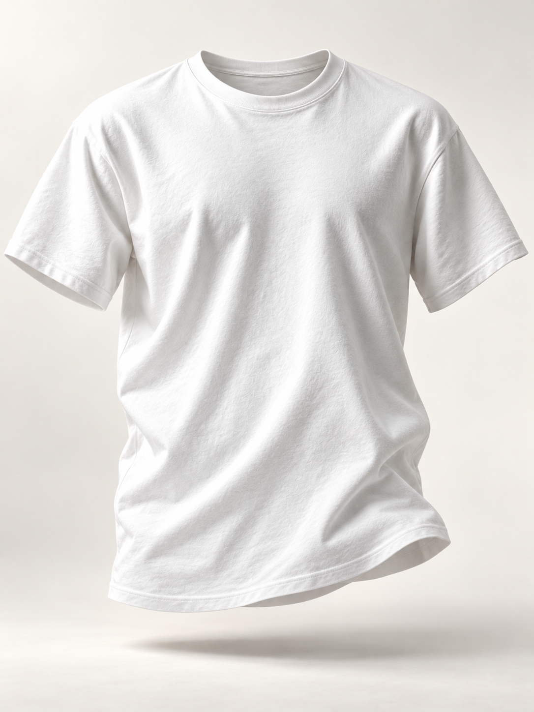

01 / The human part
Not everything
we carry
can be seen.
There is strength in continuing.
 Bag 0
Bag 0

Scroll to look within ↓
01 / The human part
There is strength in continuing.

1987 / An act of remembrance
The AIDS Memorial Quilt joins individual stories in collective remembrance.
Read the history ↗Source: National AIDS Memorial / Concept illustration. No affiliation or endorsement.
Less on the surface. More underneath.
Discover the shirt ↗01 / The familiar, reconsidered
A familiar outline, seen a little differently. Follow the neckline, sleeve and hem.
A closer look
A simple crew neckline. Room for the person who wears it.
AI-generated concept image. These are visual close-ups; actual construction, materials and an interior or back view have not been supplied.

03 / Why white
In light, colors can come together to form white. For EKO, that becomes a thought about us: different lives, a shared human spirit.
White is our symbol of purity. A little less ego. A little more room for what connects us.
A simple shirt that stands for the strength you carry.
A study in white / AI-generated botanical imagery
04 / An everyday expression
A familiar silhouette. A meaning of your own. For ordinary days, and everything they hold.
Your demo bag is empty.
A product concept. Image is an AI-generated visualization. Demo sizes only; no orders or payments. Your bag resets on refresh.